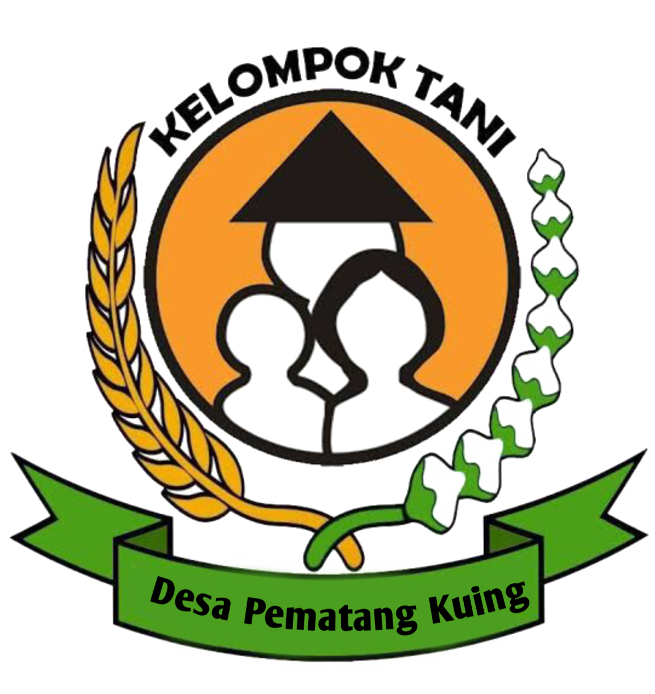
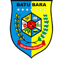
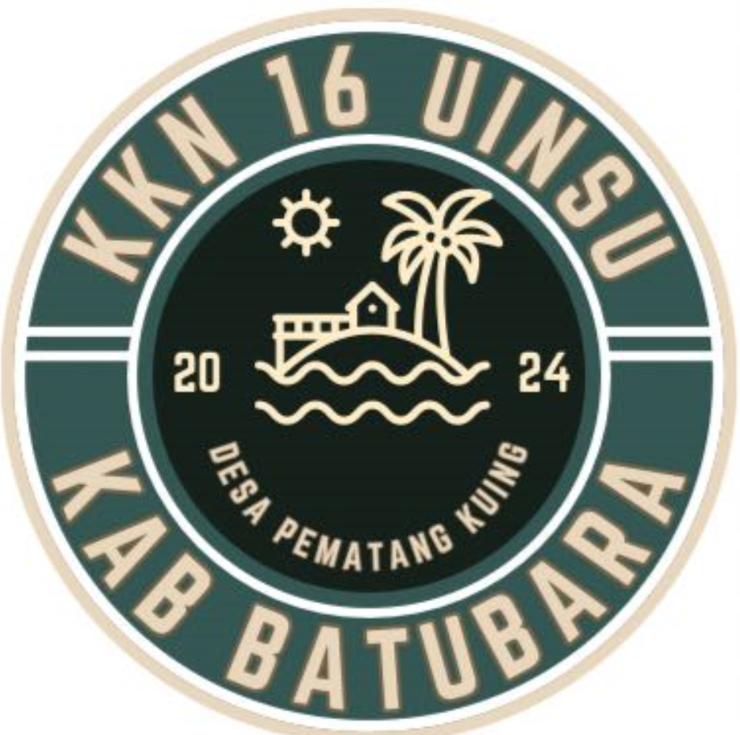

Kelompok Tani Pematang Kuing
Didukung Oleh



Selama 24 tahun, Kelompok Tani Desa Pematang Kuing telah tumbuh menjadi pilar pertanian di desa kami. Berdiri sejak tahun 2000, kelompok ini telah melalui banyak tantangan, mulai dari perubahan iklim hingga fluktuasi harga pasar. Dengan semangat gotong-royong dan inovasi, para petani kami beralih dari metode tradisional ke teknik pertanian modern, yang lebih ramah lingkungan dan efisien. Hasilnya, produktivitas meningkat, dan kesejahteraan masyarakat pun semakin membaik.
Di usia yang hampir seperempat abad, Kelompok Tani Pematang Kuing tetap berkomitmen pada pengembangan pertanian berkelanjutan. Dengan visi menjadi pusat pertanian unggul di wilayah Batubara, kami terus berinovasi untuk menghadirkan produk-produk berkualitas tinggi, serta memberikan edukasi bagi generasi muda. Kami percaya, dengan kolaborasi dan kerja keras, masa depan yang lebih cerah bagi petani dan masyarakat desa bisa tercapai.
Kami menyediakan layanan konsultasi pertanian bagi para petani yang ingin meningkatkan produktivitas lahan mereka. Melalui bimbingan dari tenaga ahli, kami membantu dalam pemilihan bibit, pengelolaan tanah, dan penerapan teknik pertanian modern yang ramah lingkungan.
Layanan distribusi kami memastikan bahwa produk pertanian kami, seperti padi, jagung, dan singkong, dapat sampai ke konsumen tepat waktu dan dalam kondisi terbaik. Kami melayani pembelian dalam skala kecil maupun besar, dengan sistem pengiriman yang efisien dan harga yang kompetitif.
Sebagai upaya untuk memberdayakan petani lokal, kami secara rutin mengadakan pelatihan mengenai teknik budidaya tanaman, manajemen lahan, dan penggunaan pupuk organik. Pelatihan ini bertujuan untuk memperkuat kapasitas petani dan mempersiapkan mereka menghadapi tantangan pertanian modern.
Kami membuka peluang kemitraan bagi para pengusaha atau distributor yang ingin bekerja sama dalam memasarkan produk kami. Dengan jaringan pemasaran yang luas, kami siap membantu produk-produk pertanian desa Pematang Kuing dikenal lebih luas, baik di pasar lokal maupun nasional.
Untuk konsumen yang ingin membeli produk secara langsung dari kami, tersedia layanan penjualan online dan offline. Kami menjamin produk yang segar dan berkualitas, langsung dari lahan pertanian kami ke tangan Anda.
Selain membantu para petani dalam mengoptimalkan hasil pertanian, kami juga menawarkan layanan pengelolaan lahan bagi yang ingin memaksimalkan potensi lahan mereka. Kami membantu dalam perencanaan, pengolahan, hingga penanaman yang efisien agar lahan dapat memberikan hasil terbaik.
Tahun Berdiri
Jenis Pertanian
Anggota Tani
Hektar Lahan
Untuk memesan produk pertanian dari Kelompok Tani Desa Pematang Kuing, Anda dapat langsung menghubungi kami melalui kontak yang tersedia di website ini. Kami melayani pembelian dalam jumlah kecil hingga besar untuk kebutuhan rumah tangga maupun industri.
+62 823-6362-5208
tanipematangkuing@gmail.com
www.tanipematangkuing.github.io
Desa Pematang Kuing, Dusun 2, Kec. Sei Suka,
Kab. Batubara, Sumatera Utara 21256